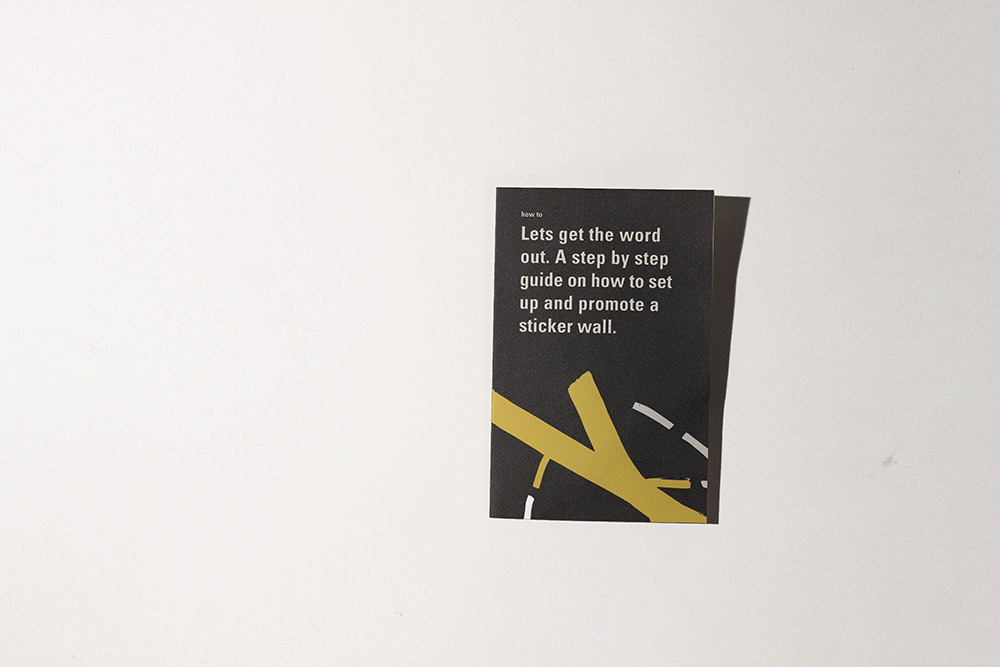
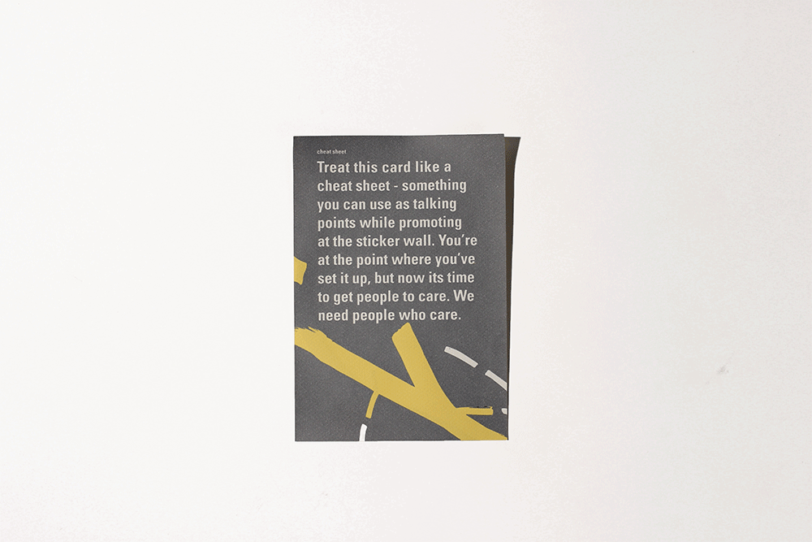
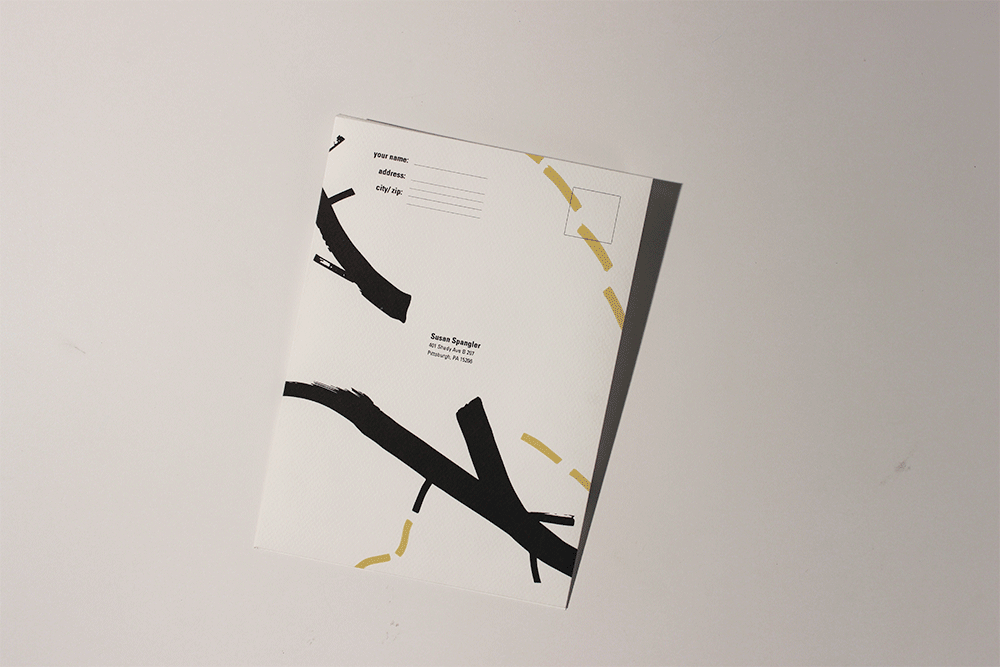
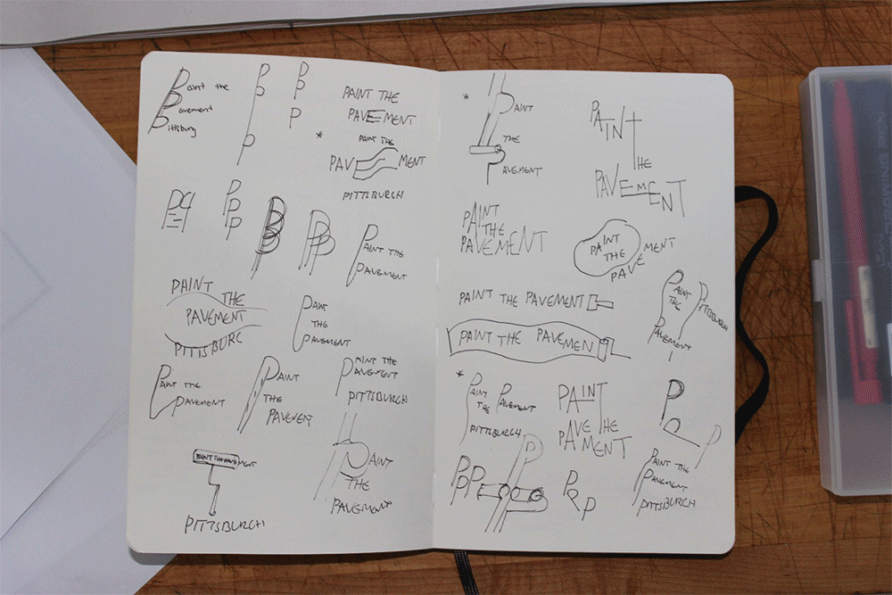
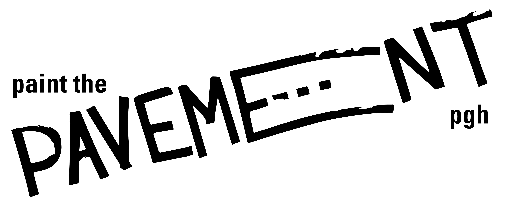
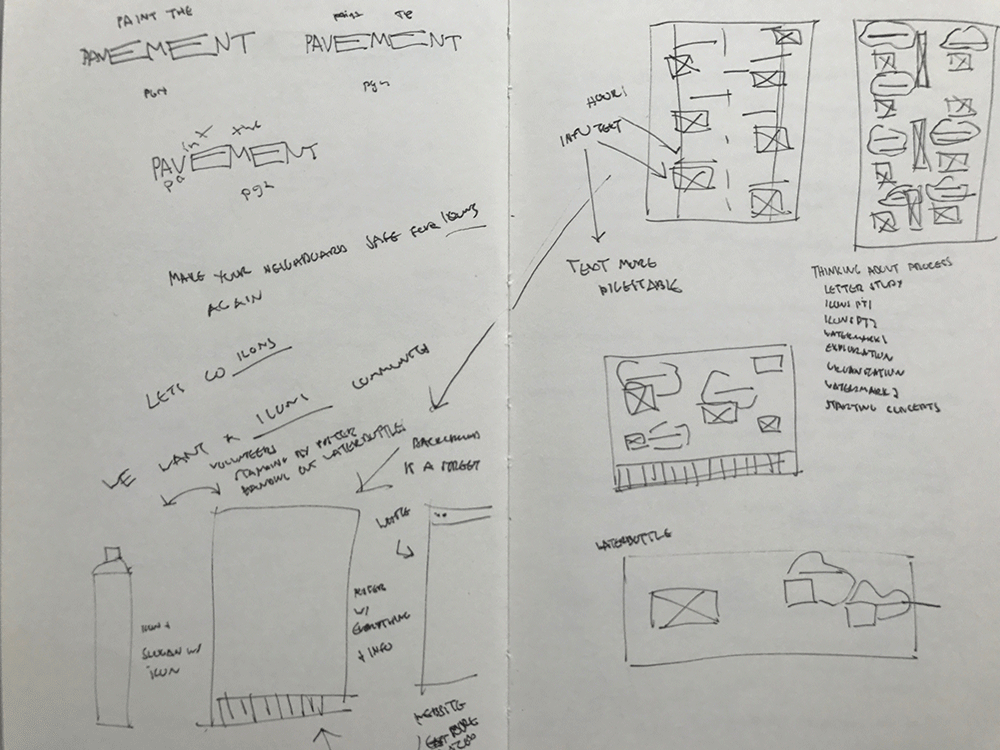
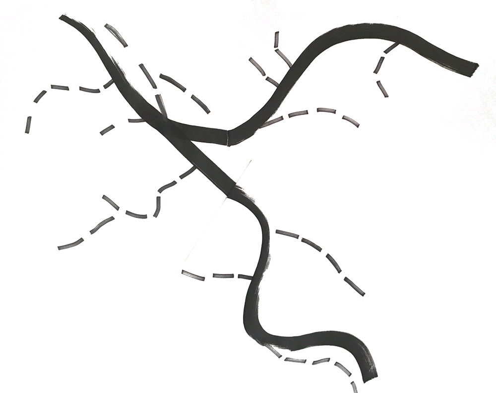

For this project we were tasked with branding a full system of deliverables to promote Paint the Pavement whose goal is to increase connections between artists, organizations and neighborhood residents. Our goal to attract, inform and eventually lead to actually applying to the organization.

My system has been decided for and inspired by Pittsburgh as I believed this aligned with the organization’s goal of bringing people together and creating a sense of unity, place and identity.

The first deliverable users will interact with - the “how to” guide
My system of deliverables begins with a “how to” book - this is how I planned to draw users in, I wanted these packets to be sent to community leaders and people of interest. They would get these in the mail and would set up these “sticker walls” - inspired by Candy Chang, in their neighborhood; these would then attract other passionate users in the neighborhood, which would eventually lead to enough people in the community being aware and wanting to take on the project.

The cheat sheet contains information that can be repeated at the sticker walls, information that will help draw users into the program
The second is a sort of cheat sheet, in our project brief we were given a document with text that we fully had to incorporate into our system. The cheat sheet, related to the first as it provides general context that was given to us, that would assist the user in promoting the concept of Paint the Pavement and its purpose.

The main part of my system, this pamphlet hold information on how to actually apply, as well as reminders and guides to keep you organized
The main part of my system is the large pamphlet, which is what holds the majority of the content. Inspired by a map of the Pittsburgh river and of road lines I created a way finding system that related to my watermark and led to the overall branding and identity of the system. The lines lead the users eye through the pamphlet, breaking down information into more digestible pieces.

The actual application that will be sent to the Paint the Pavement organization
The last part of the system is the actual application. For the application I utilized the same system and hierarchal decisions there were utilized throughout, however, I simplified it so the user could focus on filling the application out instead of following the visual elements.

Process of developing the watermark
The first step of this project was to create a wordmark, to brand our system. This wordmark is meant to symbolize our concept as a whole — basically the wordmark acted as our groundwork, it is meant to inspire our concept and be the backbone of our system.

My watermark is inspired by the design of roads, hence the “e”. It later went on to influence my type system, the hierarchy throughout as well as the way-finding system I developed for the deliverables. One thing I struggled with was balancing my hand-drawn graphical elements with type, without having one overpower the other - instead they needed to work in harmony.

Various sketchbook pages that show my iterations and thought process of how I ended up with the deliverables present in the final iteration
Due to the large amount of information our second task was to go through our given copy and create a sort of hierarchy for it.What was the most important? How would we capture the audience? This made me start to think of a modular type of system, where one of my deliverables would lead to another, and another. This process gave me more insight into the project and allowed me to start throwing around concept ideas in my head. By creating different “modules”/ by grouping the information, my goal was to make the information more easily digestible.

The transition from drawn to digital of the way finding system that I used to brand the project
The last challenge I had to overcome was creating a way finding system that would assist the user in going through the deliverables as well as make my print pieces more dynamic. I developed a graphic inspired by road design as well as the Pittsburgh map. I try to use the yellow and white lines throughout the pamphlet and print pieces to guide the reader.